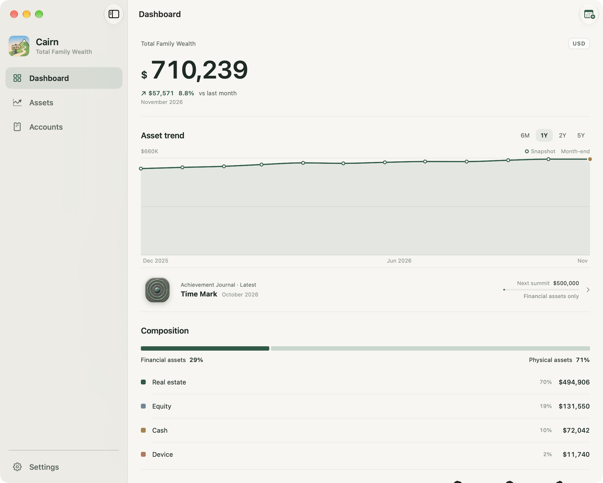
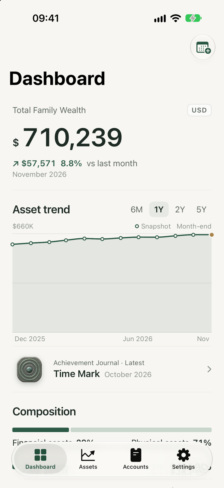
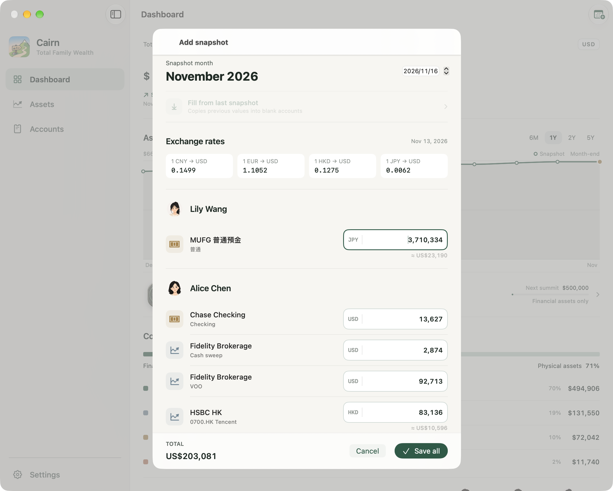
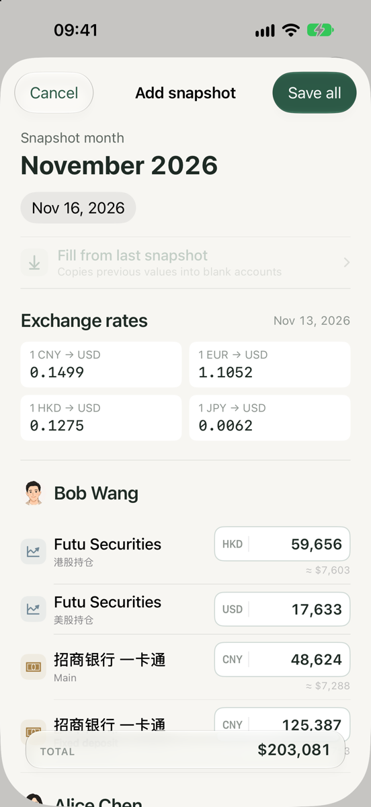
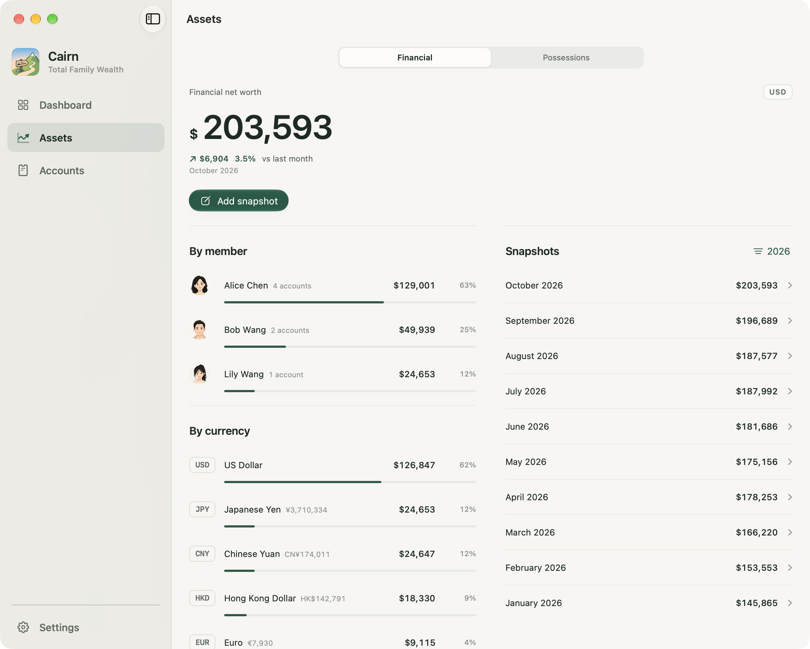
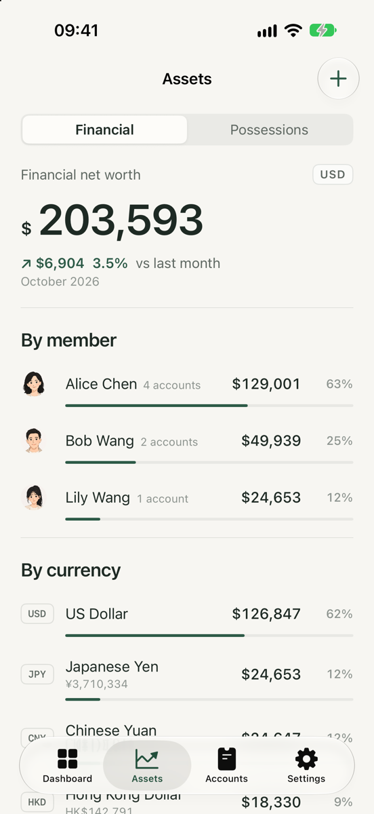
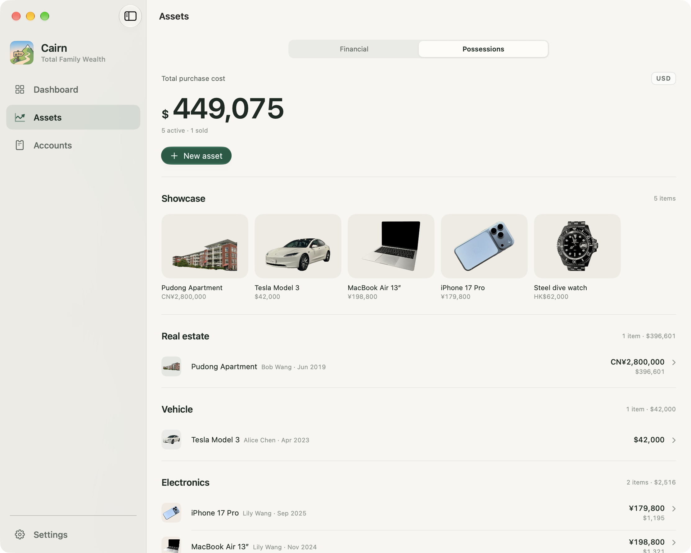
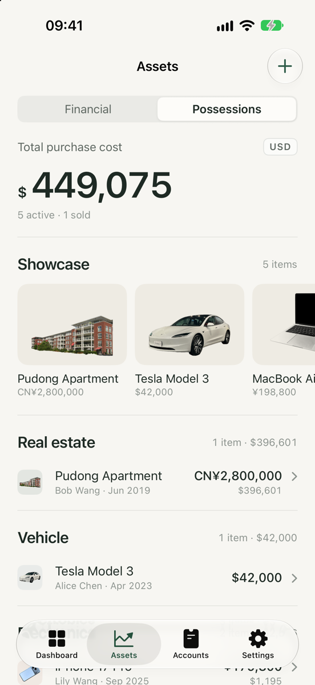
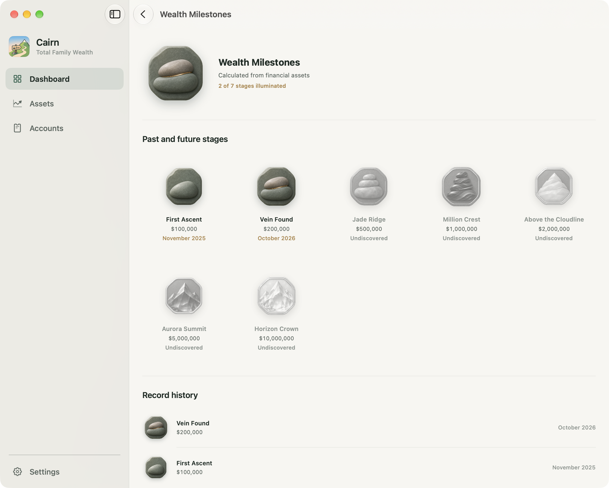
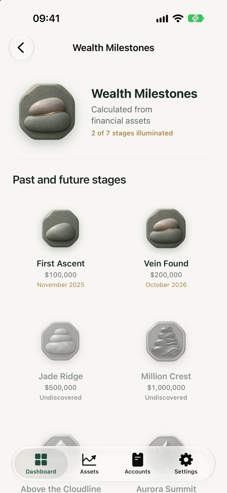

For Mac, iPhone & iPad · Free and open source 适用于 Mac、iPhone 和 iPad · 免费开源
The quiet ledger for your family's wealth.
给全家的资产，
记一本安静的账。
Every member, every account, every currency — gathered into one calm statement that lives only on your devices. 每位家人、每个账户、每种货币，汇成一份平静的家庭报表，只存在你自己的设备上。
macOS 14 or later需要 macOS 14 或更新版本


01
A few minutes, once a month. 每月几分钟，就够了。
One sheet lists every holding with its last value filled in. Change what moved, watch the household total update as you type, and save it all at once. 一张表列出所有持仓，上次的数值已经填好。只改变动的几行，合计随手更新，一次全部保存。


02
The whole family, in every currency. 全家的钱，每种货币，一目了然。
See who holds what and in which currency, all converted to your home currency with public ECB rates. Open any month to see what changed — markets, exchange rates, or your own updates. 谁持有什么、以哪种货币持有，都按欧洲央行的公开汇率折算成本位币。点开任意一个月，看清变化来自市场、汇率，还是你自己的调整。


03
The things you own, on a shelf. 家里的物件，摆上陈列柜。
Homes, cars and devices sit beside your accounts. Add a photo and Cairn lifts the object from its background — on the device, never uploaded. 房子、车和数码设备，和账户放在一起。拍张照片，Cairn 在本机把物件从背景里抠出来，不上传任何地方。


04
Milestones worth marking. 值得纪念的里程碑。
A private journal of carved-stone medals for steady habits and new summits. Share one if you like — the card never shows an amount. 一本私人日志，用石刻奖章记下坚持与新的高度。想分享也可以，分享卡片上不会出现任何金额。


Your numbers stay yours. 你的数字，只属于你。
- On your devices只在本机 Everything is stored locally. No account to create, no cloud sync. 所有数据都存在本地。不用注册账号，也不做云同步。
- One kind of request唯一的网络请求 Cairn only fetches public exchange rates. Your balances and names are never sent. Cairn 只会获取公开汇率，余额和姓名永远不会发出去。
- No tracking没有追踪 No analytics, no ads. Back up to a file you keep, and read every line of the source. 没有统计，没有广告。备份是一个你自己保管的文件，源码每一行都可以查看。
Place the first stone. 放下第一块石头。
Free and open source under Apache 2.0. Requires macOS 14 or later. 基于 Apache 2.0 免费开源，需要 macOS 14 或更新版本。
Download for Mac下载 Mac 版Opening Cairn for the first time 第一次打开 Cairn
Cairn isn't notarized by Apple yet, so macOS asks before opening it. Drag Cairn to Applications, then Control-click it and choose Open. If macOS still blocks it, go to System Settings › Privacy & Security and click Open Anyway. Cairn 暂未经过 Apple 公证，macOS 会在打开前拦一下。把 Cairn 拖进「应用程序」后，按住 Control 点按它并选择打开。如果仍被阻止，前往「系统设置 › 隐私与安全性」，点按仍要打开。
On iPhone or iPad? Build it from source with Xcode — 在 iPhone 或 iPad 上使用？用 Xcode 从源码构建—— see the guide查看指南.